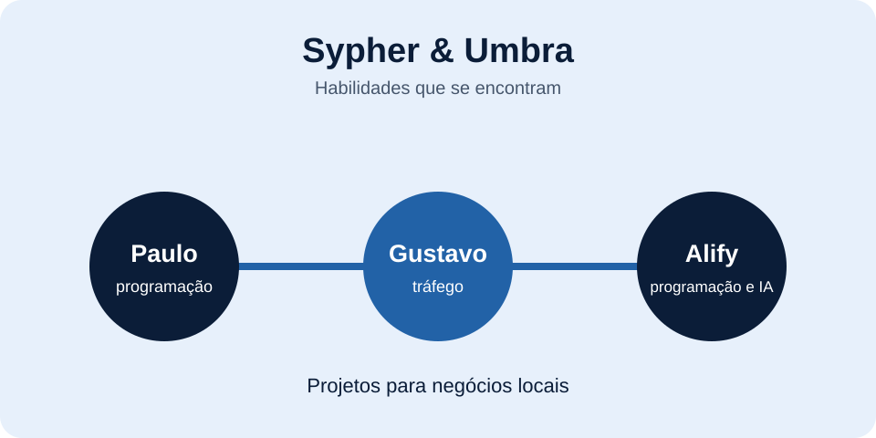

Como tudo começou
Eu e o Gustavo decidimos unir forças. Eu atuo com programação e ele trabalha com gestão de tráfego em uma empresa grande. Vimos a possibilidade de combinar essas habilidades para oferecer serviços a negócios locais.

A chegada do Alify
Em uma chamada, conversamos bastante com o Alify. Ele já conhecia programação e engenharia de IA complexa e tinha a mesma vontade de fazer o projeto crescer. Foi assim que passamos a construir a Sypher & Umbra juntos.
O que esse projeto me ensina
A empresa aproxima meus estudos de problemas reais. Quero aprender os fundamentos da programação para orientar melhor a IA, entender as soluções e conseguir resolver um problema sozinho quando for preciso.